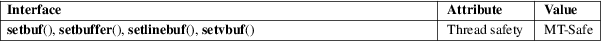

setbuf, setbuffer, setlinebuf, setvbuf − stream buffering operations
Standard C library (libc, −lc)
#include <stdio.h>
int
setvbuf(FILE *restrict stream, char
buf[restrict .size],
int mode, size_t size);
void
setbuf(FILE *restrict stream, char
*restrict buf);
void setbuffer(FILE *restrict stream, char
buf[restrict .size],
size_t size);
void setlinebuf(FILE *stream);
Feature Test Macro Requirements for glibc (see feature_test_macros(7)):
setbuffer(),
setlinebuf():
Since glibc 2.19:
_DEFAULT_SOURCE
glibc 2.19 and earlier:
_BSD_SOURCE
The three types of buffering available are unbuffered, block buffered, and line buffered. When an output stream is unbuffered, information appears on the destination file or terminal as soon as written; when it is block buffered, many characters are saved up and written as a block; when it is line buffered, characters are saved up until a newline is output or input is read from any stream attached to a terminal device (typically stdin). The function fflush(3) may be used to force the block out early. (See fclose(3).)
Normally all files are block buffered. If a stream refers to a terminal (as stdout normally does), it is line buffered. The standard error stream stderr is always unbuffered by default.
The setvbuf() function may be used on any open stream to change its buffer. The mode argument must be one of the following three macros:
|
_IONBF |
unbuffered |
|||
|
_IOLBF |
line buffered |
|||
|
_IOFBF |
fully buffered |
Except for unbuffered files, the buf argument should point to a buffer at least size bytes long; this buffer will be used instead of the current buffer. If the argument buf is NULL, only the mode is affected; a new buffer will be allocated on the next read or write operation. The setvbuf() function may be used only after opening a stream and before any other operations have been performed on it.
The other three calls are, in effect, simply aliases for calls to setvbuf(). The setbuf() function is exactly equivalent to the call
setvbuf(stream, buf, buf ? _IOFBF : _IONBF, BUFSIZ);
The setbuffer() function is the same, except that the size of the buffer is up to the caller, rather than being determined by the default BUFSIZ. The setlinebuf() function is exactly equivalent to the call:
setvbuf(stream, NULL, _IOLBF, 0);
The function setvbuf() returns 0 on success. It returns nonzero on failure (mode is invalid or the request cannot be honored). It may set errno on failure.
The other functions do not return a value.
For an explanation of the terms used in this section, see attributes(7).

setbuf()
setvbuf()
C11, POSIX.1-2008.
setbuf()
setvbuf()
C89, POSIX.1-2001.
POSIX notes that the value of errno is unspecified after a call to setbuf() and further notes that, since the value of errno is not required to be unchanged after a successful call to setbuf(), applications should instead use setvbuf() in order to detect errors.
You must make sure that the space that buf points to still exists by the time stream is closed, which also happens at program termination. For example, the following is invalid:
#include <stdio.h>
int
main(void)
{
char buf[BUFSIZ];
setbuf(stdout,
buf);
printf("Hello, world!\n");
return 0;
}
stdbuf(1), fclose(3), fflush(3), fopen(3), fread(3), malloc(3), printf(3), puts(3)